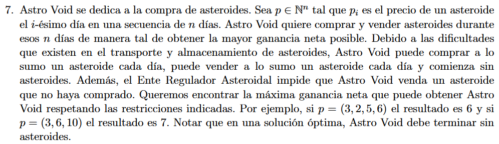
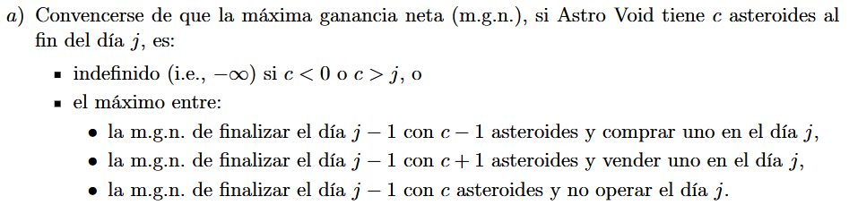
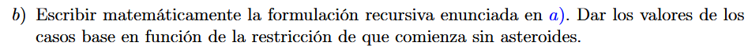
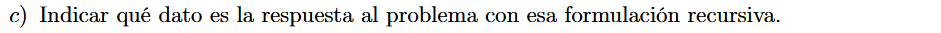
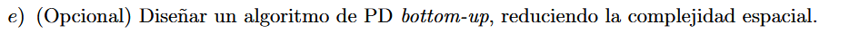

 \(✓\)

Sea \(p = \left\{ p_{1}\ldots p_{n} \right\}\) \[\text{ mgn}_{p}(j,c) = \begin{cases} - \infty & \text{si }c < 0 \vee c > j \\ 0 & \text{si }j = 0 \land c = 0 \\ \max\begin{cases} \text{mgn}_{p}(j - 1,c + 1) + p_{j} \\ \text{mgn}_{p}(j - 1,c - 1) - p_{j} \\ \text{mgn}_{p}(j - 1,c) \end{cases} & \text{sino } \end{cases}\]

Se resuelve con \(\text{mgn}_{p}(n,0)\)
f solve(p):
memo = {}
n = |p|
f bt(j,c):
si c < 0 ó c > j:
ret -inf
si j = 0 y c = 0:
ret 0
si memo[j][c] existe:
ret memo[j][c]
sino:
memo[j][c] = max(bt(j-1,c+1)+p[j],bt(j-1,c-1)-p[j],bt(j-1,c))
return memo[j][c]
bt(n,0)
La complejidad espacial es tal que \(0 \leq j \leq n,0 \leq c \leq n \Rightarrow O\left( n^{2} \right)\)
La complejidad temporal está limitada por la espacial, cada llamada recursiva es \(O(1)\) y se hace máximo \(n^{2}\) veces.

f solve(p):
n = |p|
old = actual = [-inf]*n
old[0] = 0
para cada j en [1...n]:
para cada c en [0...j]:
actual[c] = max(old[c], old[c-1]-p[j-1], old[c+1]+p[j-1])
para cada c en [j+1...n]:
actual[c] = -inf
old, actual = actual, old
ret old[0]
La complejidad temporal es \(O\left( n^{2} \right)\), trivial, hago \(n\) loops de 2 loops sumados de \(0...j\) y \(j + 1...n\)
La complejidad espacial, como guardamos solo el nivel anterior y el actual, es \(2 \cdot n \in O(n)\)